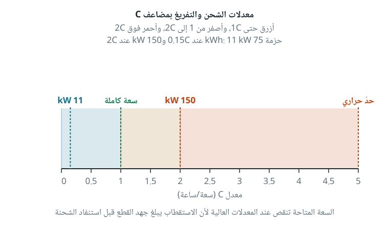

سعة البطارية
Battery Capacity
تصف سعة البطارية مقدار الشحنة التي يمكن سحبها تحت شروط تفريغ محددة. وتُقاس الشحنة بالأمبير ساعة، أما الطاقة المتاحة فتُقاس بالواط ساعة.
سعة البطارية كمية الشحنة أو الطاقة التي يمكن سحبها منها في شروط محددة. تُقاس عمليًّا بالكيلوواط ساعة في السيارات الكهربائية والتخزين الثابت، وبالأمبير ساعة في البطاريات الصغيرة. العلاقة بين الوحدتين تعتمد على الجهد الاسمي: بطارية 12 V بسعة 100 Ah تحمل 1.2 kWh، لأن kWh = Ah × V ÷ 1,000.
السعة ليست رقمًا ثابتًا؛ تتغير بمعدل التفريغ والحرارة وجهد القطع. لهذا تُعرَّف السعة المسماة عند معدل معين، ويُعبَّر عن المعدل بمضاعف C: 1C يعني تفريغ السعة كاملة في ساعة، و2C في نصف ساعة، و0.1C في عشر ساعات.
كيف تعمل الظاهرة؟
كل تفريغ يحرّك أيونات الليثيوم من الأنود إلى الكاثود عبر الإلكتروليت، والإلكترونات تمرّ في الدارة الخارجية. السعة محدودة بكمية الليثيوم القابل للاستخراج وبعدد المواقع المتاحة في المادة الفعّالة، لا بحجم البطارية. عند التفريغ السريع تُستهلك أيونات الطبقة السطحية أسرع من انتشارها داخل الجسيمات، فينشأ تدرّج تركيز يرفع الاستقطاب ويُوصل الجهد إلى حدّ القطع قبل استنفاد السعة الكلية. هذا هو السبب المادي لانخفاض السعة المتاحة عند معدلات C العالية.
العلاقة بالأرقام
بطارية 75 kWh: الشحن بقدرة 150 kW يجري عند 2C، وبقدرة 11 kW عند 0.15C. زمن الشحن النظري من 10% إلى 80% عند 150 kW: 0.7 × 75 ÷ 150 = 0.35 ساعة، أي 21 دقيقة، وهو حدّ أعلى لأن المنحنى لا يبقى عند القدرة العظمى. في الرصاص الحمضي يصف قانون بويكرت الانخفاض: C = I^k·t، وبأسّ 1.2 تكون السعة عند 1C أقل بنحو 27% من السعة عند 0.2C. وفي الليثيوم تبلغ الفعالية الدورية 90–95%، فكل 100 kWh داخلة يُستعاد منها 90–95.
مفاهيم متقاربة
يُخلط بين kWh وkW: الأولى طاقة والثانية قدرة؛ بطارية 75 kWh تستطيع أن تسلّم 150 kW، لكن ليس لمدة ساعة بل نصف ساعة نظريًّا. ويُخلط بين السعة الكلية والسعة المتاحة: في السيارات يُحتفظ بنحو 5–10% احتياطًا في الأعلى والأسفل لحماية العمر، فالسعة الصافية أقل من الإسمية. وخلط ثالث بين سعة الخلية وسعة الحزمة: توصيل الخلايا تواليًا يرفع الجهد فقط، وتوازيًا يرفع الشحنة، وسعة الحزمة بالكيلوواط ساعة هي مجموع طاقات الخلايا لا مجموع جهودها.
حدود التطبيق
رقم kWh على لوحة البطارية لا يخبر عن الطاقة القابلة للاستخدام بعد سنوات: التدهور يقلّل السعة بنسبة 2–3% سنويًّا في الاستخدام المعتدل، وأسرع مع الحرارة العالية والشحن السريع المتكرر. ولا تصف السعة قدرة البطارية على تسليم القدرة، فحزمة كبيرة قد تكون محدودة بمعدل C منخفض فيصعب شحنها سريعًا. كذلك لا تصلح مقارنة kWh بين كيميائيات مختلفة دون ذكر الجهد وجهد القطع ومعدل التفريغ، لأن التعريف نفسه يختلف.

| الكمية | القيمة | المصدر |
|---|---|---|
| سعة حزمة نموذجية | 75 كيلوواط ساعة | [1] |
| معدل الشحن عند قدرة 150 kW | 2 C | [1] |
| معدل الشحن المنزلي عند 11 kW | 0.15 C | [1] |
| الفعالية الدورية لخلايا الليثيوم | 90 % | [2] |
المصادر
- 1 Batteries for Electric Vehicles — U.S. Department of Energy, EERE. www.energy.gov/eere/vehicles/batteries · اطُّلع عليه 2026-11-16
- 2 Battery Storage — U.S. Department of Energy, Alternative Fuels Data Center. afdc.energy.gov/vehicles/electric_batteries.html · اطُّلع عليه 2026-11-16
استشهد بهذا المصطلح
الصيغتان مبنيتان من بيانات الصفحة نفسها: العنوان والتاريخ ورابط النسخة المنشورة.
سعة البطارية — Battery Capacity. (2026). ديوان المعرفة — انفراد. https://infiradev.com/diwan/terms/battery-capacity.html
@misc{battery-capacity2026,
title = {سعة البطارية},
titleaddon = {Battery Capacity},
howpublished = {{ديوان المعرفة — انفراد} — مرجع علمي عربي},
year = {2026},
url = {https://infiradev.com/diwan/terms/battery-capacity.html},
urldate = {2026-11-16},
note = {مراجعة علمية: مراجعة آلية — ديوان المعرفة (روابط المصادر + عقد المحتوى + وجود الرسم) 2026-11-16}
}
راجعه: مراجعة آلية — ديوان المعرفة (روابط المصادر + عقد المحتوى + وجود الرسم) 2026-11-16 · 2026-11-16 · آخر تحديث 2026-11-17